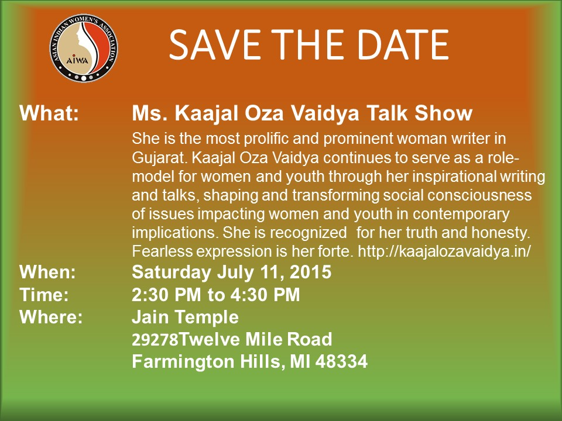
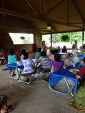
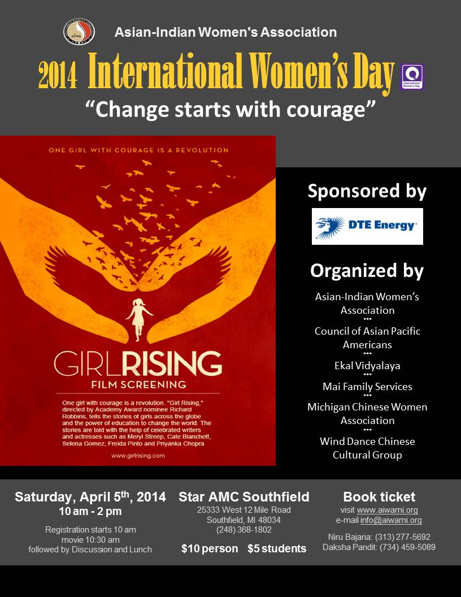

In May of 2016, we were treated to a financial planning seminar by Bhrugang Patel. Below is a link to his slides.
Understanding Your Life Plan May 31, 2016
2016 Women's Day March 24, 2016
{kind=link}
AIWAMI Fourth Annual Leadership Summit - GPS for Cultural Navigation August 2, 2015
NOTE: Due to unavoidable circumstances the Leadership Summit has been postponed to April 30th 2016.
For more information, call
Usha Kapila (734) 397-1814
Niru Bajaria (313) 277-5692
Bharti Bhavsar (734) 459-1336
Kaajal Oza Vaida Talk Show May 5, 2015

Senior Meeting on Independent Living Facility June 30, 2014
Asian Indian Women’s Association (AIWA) presents
An Exploratory Meeting for Senior Independent Living Facility in Michigan
With: Mr. Iggy Ignatius President of ShantiNiketan, Inc.
Where:
Lawrence Tech University 21000 West Ten Mile Road Southfield, MI 48075-1058 Click Here for Directions
When:
July 20, 2014 from 2:00 PM to 6:00 PM
Cost:
$15.00 per person - Non Member $10.00 per person for member and member’s spouse RSVP: By July 15th, 2014Light dinner will be served.
No walk-ins allowed please.
Contact:
For further info please call Daksha Pandit at 734-459-5089 Kalpana Chokshi at 734-972-7351 or 734-591-7829 Please make checks payable to Asian Indian Women’s Association Mail your check to: AIWA, 10946 Fellows Hill Dr. Plymouth, MI 48170Family Picnic May 13, 2014
Family Picnic on Sunday July 13, 2014
Plymouth Township Park
Plymouth, MI 48170
2 PM to 8 PM

2014 Women's Day March 12, 2014
